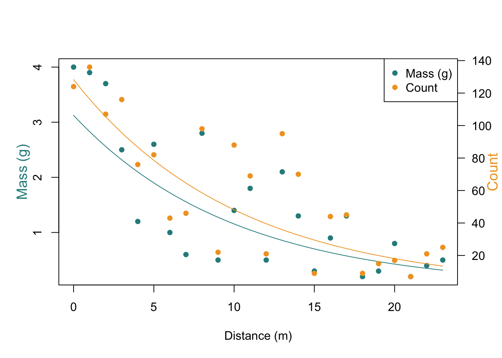
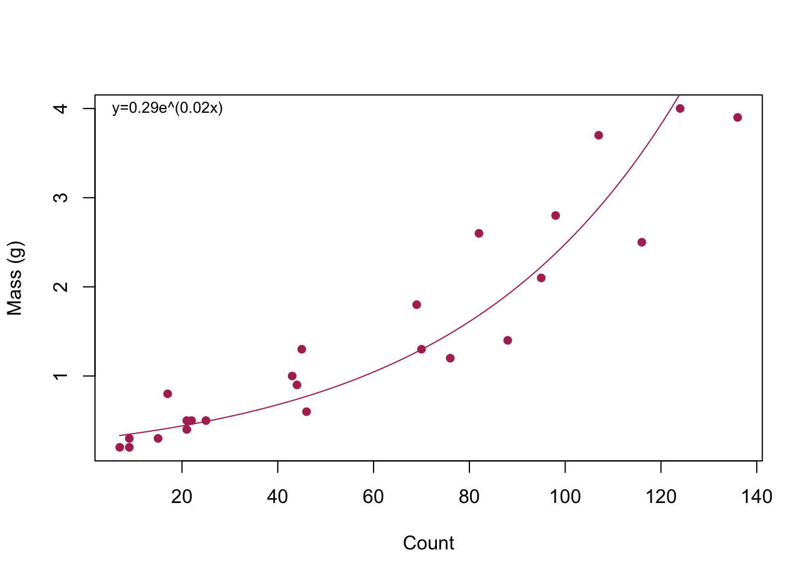

Last updated: 2024-02-27
Checks: 1 1
Knit directory: myproject/
This reproducible R Markdown analysis was created with workflowr (version 1.7.1). The Checks tab describes the reproducibility checks that were applied when the results were created. The Past versions tab lists the development history.
The R Markdown is untracked by Git. To know which version of the R
Markdown file created these results, you’ll want to first commit it to
the Git repo. If you’re still working on the analysis, you can ignore
this warning. When you’re finished, you can run
wflow_publish to commit the R Markdown file and build the
HTML.
Great! You are using Git for version control. Tracking code development and connecting the code version to the results is critical for reproducibility.
The results in this page were generated with repository version 3b92f55. See the Past versions tab to see a history of the changes made to the R Markdown and HTML files.
Note that you need to be careful to ensure that all relevant files for
the analysis have been committed to Git prior to generating the results
(you can use wflow_publish or
wflow_git_commit). workflowr only checks the R Markdown
file, but you know if there are other scripts or data files that it
depends on. Below is the status of the Git repository when the results
were generated:
Ignored files:
Ignored: .Rhistory
Ignored: .Rproj.user/
Ignored: myproject/.Rhistory
Ignored: myproject/.Rproj.user/
Untracked files:
Untracked: myproject/analysis/area_analysis.Rmd
Untracked: myproject/analysis/quadrat_analysis.Rmd
Untracked: myproject/figure/
Untracked: myproject/quadrat_analysis.Rmd
Untracked: myproject/quadrat_analysis.html
Unstaged changes:
Deleted: myproject/analysis/first-analysis.Rmd
Modified: myproject/analysis/index.Rmd
Note that any generated files, e.g. HTML, png, CSS, etc., are not included in this status report because it is ok for generated content to have uncommitted changes.
There are no past versions. Publish this analysis with
wflow_publish() to start tracking its development.
Distance (m) Avg Area (cm²) Mass (g) Count g/leaf g/cm²
-2 1.0075946 0.7 37 0.01891892 0.01877632
-1 1.2685682 4.0 132 0.03030303 0.02388759
0 1.3095806 4.0 124 0.03225806 0.02463236
1 1.2668134 3.9 136 0.02867647 0.02263670
2 1.2268774 3.7 107 0.03457944 0.02818492
3 1.2631379 2.5 116 0.02155172 0.01706205
4 1.1206974 1.2 76 0.01578947 0.01408897
5 1.2098148 2.6 82 0.03170732 0.02620841
6 1.1871860 1.0 43 0.02325581 0.01958902
7 0.9659348 0.6 46 0.01304348 0.01350348
8 1.1664694 2.8 98 0.02857143 0.02449394
9 1.1631364 0.5 22 0.02272727 0.01953965
10 1.0106136 1.4 88 0.01590909 0.01574201
11 1.1398406 1.8 69 0.02608696 0.02288650
12 1.1920952 0.5 21 0.02380952 0.01997284
13 1.2853053 2.1 95 0.02210526 0.01719845
14 1.1091429 1.3 70 0.01857143 0.01674395
15 1.1121111 0.3 9 0.03333333 0.02997302
16 1.2313409 0.9 44 0.02045455 0.01661160
17 1.3291778 1.3 45 0.02888889 0.02173441
18 1.2903333 0.2 9 0.02222222 0.01722208
19 1.1270667 0.3 15 0.02000000 0.01774518
20 1.9064706 0.8 17 0.04705882 0.02468374
21 1.6171429 0.2 7 0.02857143 0.01766784
22 1.5690476 0.4 21 0.01904762 0.01213961
23 1.5104000 0.5 25 0.02000000 0.01324153
